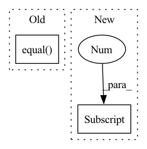

Pattern ID :1432

Before Change
"""Simple accuracy calculation for training
tgt-arr, pred-arr: torch tensors
"""
if torch.equal(pred_tnsr.type(torch.long), tgt_tnsr):
return torch.tensor(1)
else:
return torch.tensor(0)
After Change
tgt_tnsr: torch tensor :shp: (batch, voc_size, seq_len)
"""
pred_seq = torch.argmax(pred_tnsr, dim=1)
batch_sz = pred_seq.shape[0]
crt_cnt = 0
for i in range(batch_sz):
if torch.equal(pred_seq[i,:], tgt_tnsr[i, :]):
crt_cnt += 1
In pattern: SUPERPATTERN
Frequency: 3
Non-data size: 2
Instances
Fragment ID: 6637476
Project Name: ai4bharat/indiannlp-transliteration
Commit Name: 9beb7599f6abb477c840a068acbfa67501497019
Time: 2020-06-10
Author: josephgeobenjamin@gmail.com
File Name: utilities/running_utils.py
M Class Name: AnonimousClass
N Class Name: AnonimousClass
M Method Name: accuracy_score(2)
N Method Name: accuracy_score(2)
M Parent Class:
N Parent Class:
M File Name: utilities/running_utils.py
N File Name: utilities/running_utils.py
M Start Line: 38
M End Line: 42
N Start Line: 39
N End Line: 45
'>
Before Change
y = self.model.predict(x, verbose=0)
loss = y_pred[0]
accuracy = y_pred[1]
correct = tf.equal(tf.argmax(y, 1), tf.cast(target, tf.int64))
// metrics["test_correct"] += tf.reduce_mean(tf.cast(correct, tf.float32))
metrics["test_loss"] += loss
metrics["test_total"] += 1
After Change
test_results = self.model.test_on_batch(x=x, y=target, reset_metrics=False)
logging.info("test_results = {}".format(test_results))
mlops.log({"Test/Loss": test_results[1], "round": args.round_idx})
mlops.log({"Test/Acc": test_results[0], "round": args.round_idx})
'>
Fragment ID: 6637475
Project Name: fedml-ai/fedml
Commit Name: f0596a0b7173add589515ac589abbadd02f879c9
Time: 2022-08-14
Author: chaoyanghe.com@gmail.com
File Name: python/examples/cross_silo/tf-mqtt_s3_fedavg_mnist_lr_example/tf_model_aggregator.py
M Class Name: TfServerAggregator
N Class Name: TfServerAggregator
M Method Name: test(4)
N Method Name: test(4)
M Parent Class: ServerAggregator
N Parent Class: ServerAggregator
M File Name: python/examples/cross_silo/tf-mqtt_s3_fedavg_mnist_lr_example/tf_model_aggregator.py
N File Name: python/examples/cross_silo/tf-mqtt_s3_fedavg_mnist_lr_example/tf_model_aggregator.py
M Start Line: 29
M End Line: 44
N Start Line: 32
N End Line: 39
'>
Before Change
y = self.model.predict(x, verbose=0)
loss = y_pred[0]
accuracy = y_pred[1]
correct = tf.equal(tf.argmax(y, 1), tf.cast(target, tf.int64))
// metrics["test_correct"] += tf.reduce_mean(tf.cast(correct, tf.float32))
metrics["test_loss"] += loss
metrics["test_total"] += 1
After Change
test_results = self.model.test_on_batch(x=x, y=target, reset_metrics=False)
logging.info("test_results = {}".format(test_results))
mlops.log({"Test/Loss": test_results[1], "round": args.round_idx})
mlops.log({"Test/Acc": test_results[0], "round": args.round_idx})
'>
Fragment ID: 6637474
Project Name: fedml-ai/fedml
Commit Name: 2f09d098b1ff604f1c408a26250fccf4364fdf1f
Time: 2022-08-14
Author: chaoyanghe.com@gmail.com
File Name: python/examples/cross_silo/tf-mqtt_s3_fedavg_mnist_lr_example/tf_model_aggregator.py
M Class Name: TfServerAggregator
N Class Name: TfServerAggregator
M Method Name: test(4)
N Method Name: test(4)
M Parent Class: ServerAggregator
N Parent Class: ServerAggregator
M File Name: python/examples/cross_silo/tf-mqtt_s3_fedavg_mnist_lr_example/tf_model_aggregator.py
N File Name: python/examples/cross_silo/tf-mqtt_s3_fedavg_mnist_lr_example/tf_model_aggregator.py
M Start Line: 29
M End Line: 44
N Start Line: 32
N End Line: 39